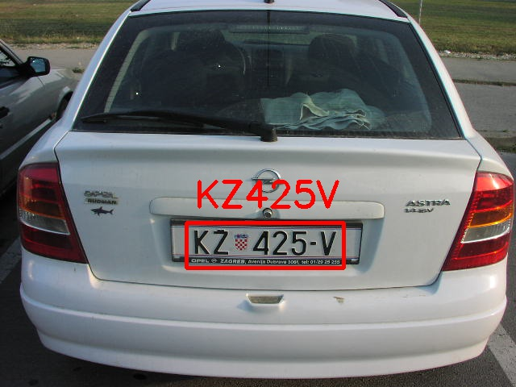
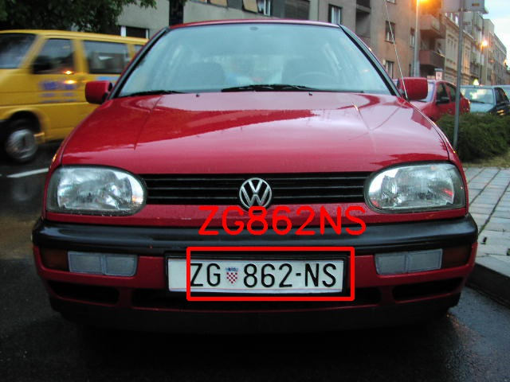
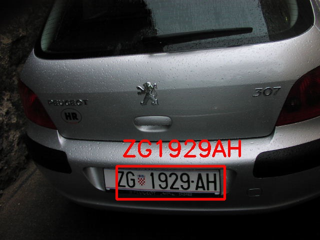
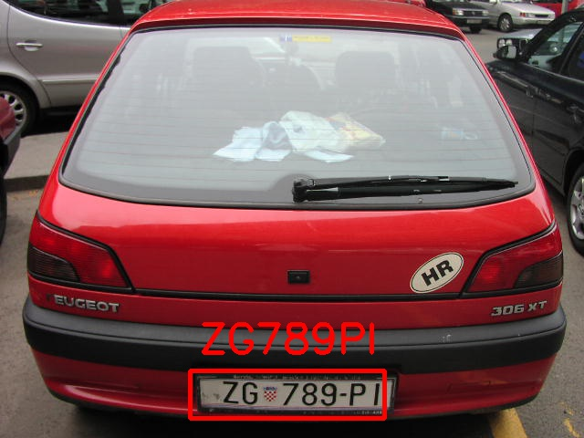
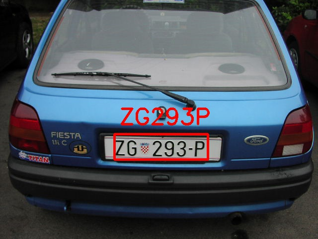
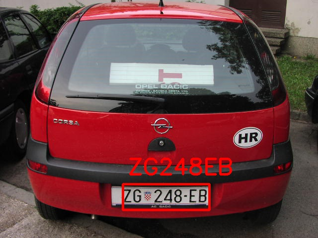
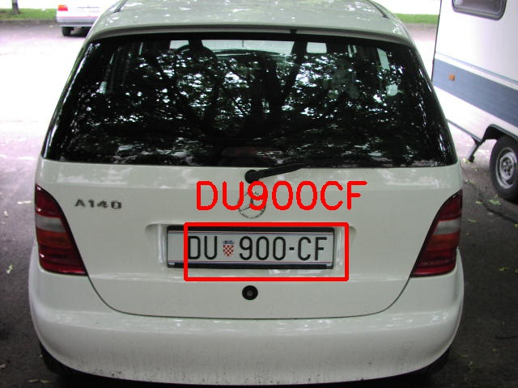
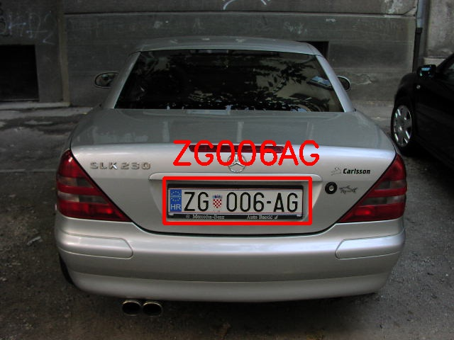
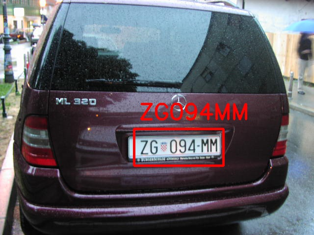

Problem Definition
License plate recognition could be used in a lot of real-world applications like traffic violations, tolls, etc. Most of the license plates has certain pattern, it will probably make the recognition easier. We only need to locate the plate, and do the recognition, but of course there is some processing of the image. A few forseen difficulties are the changing lighting conditions of each image and how we could isolate the plate from the background that might have similar colors, and also the angels of the plate could affect the result of recognition. There are some real-world corner cases to be considered and handled.
Method and Implementation
Our algorithm could be divided into 4 steps: pre-processing, plate detection, character segmentation, and character recognition.
1. Preprocessing of the image
In this step, images need to be processed to a more suitable and clearer input for the following steps. Noise reduction and enhancing the constrast was applyed as to enhance the difference between the character and background which would be beneficial to sperate numbers from background in following steps.
2. Localization of license plates
Firstly, use the gray image and do the vertical edge detection with Sobel filter. As the edge of the characters on the plate is obvious in vertical direction, this step could help us filter out most of the inconsequential information in the image. Then the binary conversion for this image with self adapted threshold has been applied which enhanced the edge of characters and plates. Then we used Morphology to treat the image, that is dilation and erosion was implemented to connect the similar and closed area and remove the tiny isolate blobs. In this step, we expected that the blobs in the area of license plate are connected which seems like a whole part. After the Morphology treatment, we looked for the plate rectangle area with some limitations: the area of plate would be in the range of 1%-5%; it should be at the height of 40% - 90% of the image and in the range of 20%-60% width of the image.The ratio of the plate's height to its width should less than 0.5. Finally, choose the biggest blob in the leaving blos, that will be the plate area of the car.
3. Character segmentation
Because the plate obtained from previous step is somehow a raw plate image, we need to further process it. After binarizing the raw plate image, we perform morphology operations to find the largest black blob as this is the potential plate area. Then we perofrm another findBinaryLargeObjects to find all white blobs, which are characters and noises. We then color white blobs that are either too large or too small to be characters to be black. Then we perform vertical and horizontal projections to locate the characters and segment them.
4. Character recognition
After segmenting each character, we simply perform a template matching to find out the exact character. Because all pictures in our dataset are taken from the back of the car, they are rather simple for the algorithm to recognize. Firstly, in order to get a hight accuracy of character recognize, we choose 3 templates for each characters which means that the character from 'A' to 'Z' and 0 to 9 all have 3 models as the templates. Then we get rid of the redundant black border in the characer segmentation part and only compare the character area with all the templates. After template mathching, we calculate the possibility of each template and choose the highest one as the recognition result. After looping all the character in the plate, we finally output the image with red rectangule mark the area of plate and recognition result.
Experiments
Our dataset contains 135 car images. We run the algorithm on all of them, and then manually check the correctness. The accuracy result is 76%.
Expected Result!!!!!!!!!!
| common plate recognition |  |  |
| '1' and 'I' |  |  |
| '2' and 'Z' |  | |
| '8' and 'B', '0' and 'D' |  |  |
| 'G' and '0' |  |  |
Discussion
Discuss your method and results:
- Our method is designed specifically for the dataset chosen. For most of the images in this dataset, we could segment and recognize the character clean and clear. But because we used vertical projection for character segmentation, it certainly require each character to be vertical. If there is too much rotation for the characters, the result of the segmentation could be compromised.
- Our initial thought was to use neural network for character recognition, but our time is limited to self-learn that, so we decided to use template matching instead. Because template matching is relatively static, the requirement for processing the image is more strict.
Conclusions
In this project, the methods we used are classic and essential in the computer vision area. In order to perform an accurate result, we tried several times with different methodologies which we learned in CV course and finally choose a appropriate way to recognize the license plate. The accuracy of the recognition is 76% which is quite a good score for template matching in real world as it may be influenced by lightness, different angle and blur objects.
Credits and Bibliography